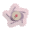
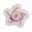
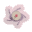
infection
Racimo de 3 lóbulos con cilios, núcleo magenta y halo violeta.
Frames animados en bucle (180 ms). Fondo oscuro para revisar legibilidad y siluetas.



Racimo de 3 lóbulos con cilios, núcleo magenta y halo violeta.
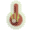
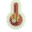
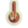
Gota necrótica umber con fisuras chartreuse y goteo carmesí.
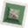
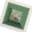
Cristal esmeralda de 4 puntas con vena rúnica y catch especular.
Iris térmico cian con 4 muescas de cuadrante y pupila ámbar.
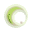
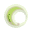
Esquirla de arco verde-lima con núcleo blanco y mota satélite.
Fragmento de cruz clínica cian con núcleo verde y satélites.
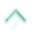
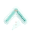
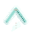
Chevrón de barrido azul con cola de datos y doble punta.
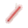
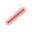
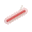
Tajo carmesí con borde blanco y virutas.
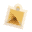
Dardo ámbar con aletas traseras y punta brillante.

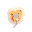
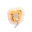
Ascua naranja con costra oscura y chispas.
Cristal de onda azul con fractura radial.
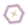
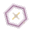
Glifo violeta flotante con anillo rúnico.
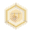
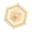
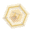
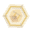
Hexágono ámbar con circuito interno y 3 pines.
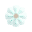
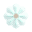
Estrella menta de 8 púas con núcleo blanco.
Espiral de esporas menta con fizz y gota.
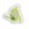
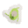
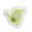
Espora lobulada con cilios y núcleo bioluminiscente.
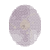
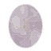
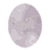
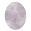
Nube FBM con filamentos deshilachados.
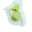
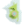
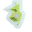
Espora con aleta y estela corta.
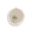
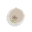
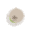
Mota bioluminiscente chartreuse con anillo y destello estelar.
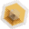
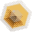
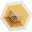
Gema ámbar facetada con destello en cruz.
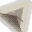
Esquirla beige angular con bisel y fractura.
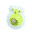
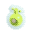
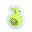
Gota lima con cáustica interna y borde brillante.
Salpicadura radial de 8 gotas con anillo de vapor.
Bruma umber/carmesí con filamentos necróticos.

Chispa de 4 puntas con tendril bifurcado.
Anillo rúnico con 8 muescas y glifos.
Ondas concéntricas distorsionadas con runas.
Espora violeta con halo giratorio y satélites.

Brasa con humo fúngico y núcleo naranja.
Cruz de luz clínica con hexágono y 4 destellos.
Retícula con anillo, ticks y cruz.
Estallido de espinas rosa con anillo de histamina.
Polvo marfil neutro con núcleo blanco (tintable por cepa).
Fragmentos de píxel glitch púrpura/cian con desplazamiento.